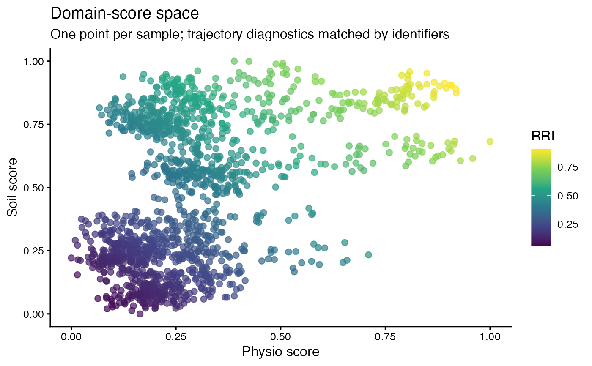

R/plot_rri_state_space.R
plot_rri_state_space.RdPlot domain-score space with correctly matched trajectory diagnostics
RRI result with aligned identifiers in row_scores.
Optional one-row-per-trajectory diagnostic table.
Domain scores, or group association/kinetics.
RRI, Memory, or an explicitly supplied trajectory_class.
Full key shared between row_scores and rec.
Plot font size.
ggplot. Domain scores are not relabelled as mechanistic properties.
# \donttest{
sim <- simulate_redox_holobiont(seed = 1)
res <- rri_pipeline(soil = sim$Eh_stability, plant = sim$ROS_flux,
id = sim$id)
#> Warning: Unanchored latent axes have arbitrary signs; RRI is exploratory, not directionally validated resilience.
#> Warning: Excluding simulator-derived hidden columns from scoring: Cacc_EAC, Cacc_EDC, Cacc_total, Cacc_fraction, net_oxidative_balance, alpha_accept, alpha_donate, k_accept_h, k_donate_h
plot_rri_state_space(res, group_cols = c("plot", "depth", "plant_id"))

# }